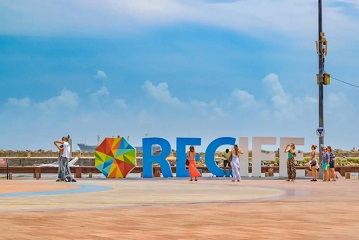

Museu Cais do Sertão
Para os amantes de artes e culturas, o Museu Cais do Sertão traz referências à cultura do sertão nordestino e oferece experiências interativas e sensoriais. Além disso, o espaço conta com cursos, palestras e workshops e possui exposições permanentes e temporárias sobre o tema.
Parque das Esculturas de Francisco Brennand

Em 2000, para comemorar os 5000 anos da chegada dos portugueses ao Brasil, o Marco Zero do Recife Antigo recebeu uma exposição com várias obras do artista plástico pernambucano Francisco Brennand. A mais famosa delas é a Torre de Cristal, com 32 metros de altura, mas são cerca de 90 esculturas, que representam diferentes contextos da cultura pernambucana de materiais como argilas e bronzes. Para chegar até o parque, é necessário atravessar em pequenas embarcações até o outro lado do Estuário do Porto do Recife.
Boemia no Marco Zero do Recife Antigo
Por último, não dá para falar do Marco Zero sem considerar as muitas opções de entretenimento nos antigos armazéns ao longo da orla. Para se ter uma ideia, são bares temáticos, restaurantes com gastronomia local e mundial e points para quem quer diversão, boa música e entretenimento. Além deles, há opções para os mais diversos bolsos e gostos também na região central do Antigo Recife, em vielas de pedra sabão e um charme único da capital de Pernambuco.
